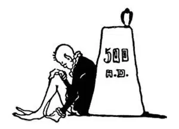

42
New Places—New Heroes
新地方，新英雄

GERMANIC kings were ruling over pieces of the Western Empire, but in Constantinople a Roman was still ruling over the Eastern Empire. This Roman was named Justinian. Now, up to this time there had been a great many rules or laws by which the people were governed. There were so many of these rules and they were so mixed up that one law would tell you you could do one thing and another would tell you you couldn't. It was as if your mother said you could stay up till nine o'clock tonight and your father said you must go to bed at eight. It was hard for people to tell, therefore, what one must do and what one must not do.
In order to untangle this snarl, Justinian had a set of laws made for the government of his people, and many of these were so good and so just that they are still the law today. If you notice that Justinian begins with Just , this will help you to remember that he was the one who made just laws.
Another thing Justinian did that has lasted to the present time was to build in Constantinople a very beautiful church called Santa Sophia. Though it is no longer a church, it is still standing after all these years and is a beautiful sight to see. Still another thing he did that you could never guess. It had nothing to do with war or law or buildings.
Travelers from the Far East, where China now is, had brought back tales of a wonderful caterpillar that wound itself up with a fine, thin thread over a mile long, and they told stories of how the Chinese unwound this thread and wove it into cloth of the finest and smoothest kind. This thread, as you might guess, was called silk, and the caterpillar that made it was called the silkworm. People in Europe had seen this beautiful silk cloth, but how it was made had been a mystery—a secret. They thought it so wonderfully beautiful that it was supposed to have been made by fairies or elves or even sent down from heaven. Justinian found out about these caterpillars and had men bring these silkworms into Europe so that his people also might make silk cloth and have silk ribbons and fine silk garments, and therefore we give him the honor of starting the manufacturing of silk in Europe.
About the same time that Justinian lived, there was a king in France named Clovis. Clovis belonged to the Germanic tribe called the Franks, which gave the name France to that country. Clovis believed in Thor and Woden as all of his people did. Clovis had a wife named Clotilda, whom he loved very dearly. Clotilda thought all the fighting and cruelty, which her people seemed to like, was wrong. She had heard about the religion of Christ, which did not believe in quarreling and fighting, and she thought she would like to be a Christian. So she was baptized. She then tried to persuade her husband, Clovis, to become a Christian, also.
Clovis was just then going to war—the very thing the Christians preached against. However, just to please his wife, he promised her, if he won the battle, he would become a Christian. He did win, and he kept his word and was baptized and had his soldiers baptized also. Clovis made Paris his capital, and Paris is still the capital of France.
It was about this same time, also, that a king named Arthur was ruling in England. Many stories and poems have been written about him, most of which are mythical. Although we know these stories are not historically true, they are, nevertheless, important and interesting—like those tales that are told about the heroes of the Trojan War.
It was said that there was a sword called Excalibur stuck so fast in a stone that no one could draw it out except the man who should be king of England. All the nobles had tried without success to draw the sword, when one day a young boy named Arthur pulled it out with the greatest ease, and he was accordingly proclaimed king.
King Arthur chose a company of the nobles to rule with him, and as they sat with him at a round table they were known as the Knights of the Round Table. Tennyson, a great English poet, has written in verse an account of the doings of King Arthur and his knights in a long poem called The Idylls of the King , which you will have to read yourself, for we must go on to the next story.
【中文阅读】
由日耳曼人充当的国王们割据了西罗马帝国的土地，但是在君士坦丁堡，一个罗马人仍然在统治着东罗马帝国。这个罗马人名叫查士丁尼。直到此时，有一大堆法律或规则管理着罗马人。这些规则如此繁多又混淆不清，以至于一条法律说你可以这样做，而另一条却说你不能这样做。这好像你妈妈说你今天晚上可以到9点再睡觉，而你爸爸却说必须在8点钟就上床睡觉。因此，人们很难分清什么是必须做的，什么是不该做的。
为了清理这种混乱情况，查士丁尼让人制定了一套管理人民的法典。其中有很多法律非常完善合理、公正，甚至还成为今天的法律。如果你注意到了查士丁尼这个名字以“公正” ［1］ 开头，会有助于你记住正是他制定了公正的法律。
查士丁尼做的另一件延续至今的事就是在君士坦丁堡建了一座非常漂亮的教堂，叫圣索菲亚教堂。尽管它现在不再是教堂了，但经过这么悠长的岁月，它仍然屹立在那里，成了一处美丽的游览胜地。查士丁尼还做了一件你怎么也猜不到的事情，这件事和战争、法律或建筑都没有关系。
有些从远东，也就是从今天中国所在地方来的旅行者，讲述了他们听说的一种神奇的毛毛虫的故事，据说这种毛毛虫会用一根精致的、超过1英里长的细线把自己缠绕起来。他们还说到有关中国人如何能把这根长线解开，把它织成最精美、最光滑的布料的各种趣事。这根线可能你已经猜到了，就是蚕丝，而产生这根丝的毛毛虫叫蚕。欧洲人见过这种美丽的丝绸，但是它是怎样织成的却一直是个谜——是个秘密。他们觉得这种布实在是精美绝伦，猜想它可能是仙女或精灵织成的，甚至可能来自天堂。查士丁尼查明了有关这些毛毛虫的事情，就派人把蚕带到了欧洲，这样，自己国家的人也能织出丝绸，也有丝缎带和精美的丝绸衣服了。所以，我们把他看作欧洲丝绸制造业的开创者。
大约和查士丁尼同一时期，法国有个国王叫克洛维。克洛维属于一支叫做“法兰克人”的日耳曼部落，就是这支部落把这个国家命名为“法兰西”。克洛维和他的民族都信奉托尔神和沃登神。克洛维的妻子叫克洛蒂尔德，他非常宠爱她。克洛蒂尔德认为，所有的战争和残酷行为都是不义的，而她的人民似乎就喜欢打打杀杀。她听说基督教不赞成冲突和战争，就觉得自己想要成为一名基督徒。于是，她受了洗。然后，她又设法劝说自己的丈夫克洛维也成为一名基督徒。
这个时候，克洛维正准备打仗——而这正是基督徒反对的事情。不过，为了让妻子高兴，他向她保证，如果打了胜仗，他就做基督徒。结果，他真的打了胜仗，于是他遵守诺言，接受了洗礼，而且还让他的士兵们也一起受洗。克洛维让巴黎成为都城，现在巴黎仍然是法国的首都。
也是在这同一时期，统治英格兰的国王叫亚瑟。有很多描述亚瑟王事迹的故事和诗歌，其中大部分都像神话传奇。虽然我们知道这些故事都不是历史上的真事，但是这些故事具有非常重要的意义而且非常有趣——就像那些讲述特洛伊战争英雄的故事一样。
据说，有一把叫“艾克斯卡利伯”的剑，牢牢地插在一块石头里，除了将成为英格兰国王的那个人，谁也没法把它拔出来。所有的贵族都试图拔出这把剑，但是都失败了。有一天，一个叫亚瑟的小男孩轻而易举就把剑拔了出来。于是，他就被宣告为英格兰国王。
亚瑟王选了一批贵族和他一起管理国家，由于他们和他经常围圆桌而坐，这些贵族就被称为“圆桌骑士”。一位著名的英国诗人丁尼生写了一首押韵的长诗来描述 亚瑟王和他的圆桌骑士的事迹，这首长诗叫《国王叙事诗》。这首诗你得以后自己去读了，因为我们要接着讲下一个故事了。

公元500年